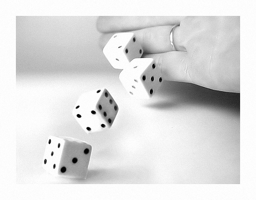
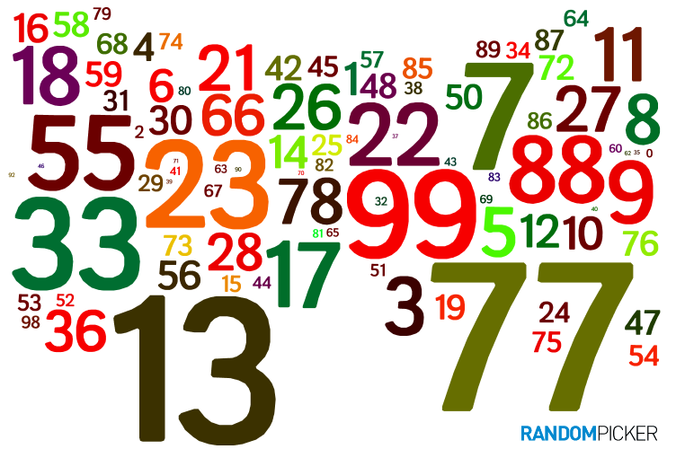
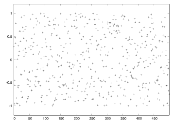
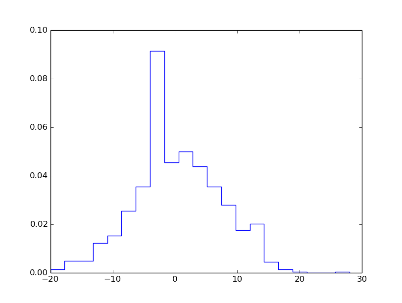
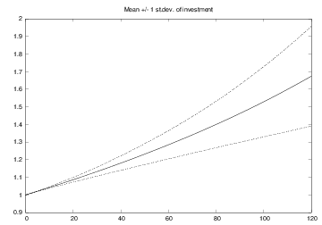
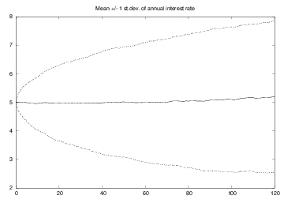

Python has a random module for drawing random numbers.
random.random() draws random numbers in \( [0,1) \):
>>> import random
>>> random.random()
0.81550546885338104
>>> random.random()
0.44913326809029852
>>> random.random()
0.88320653116367454
The sequence of random numbers is produced by a deterministic algorithm - the numbers just appear random.
random.random() generates random numbers that are uniformly distributed in the interval \( [0,1) \)random.uniform(a, b) generates random numbers uniformly distributed in \( [a,b) \)
N = 500 # no of samples
x = range(N)
y = [random.uniform(-1,1) for i in x]
from scitools.std import plot
plot(x, y, '+', axis=[0,N-1,-1.2,1.2])

random.random() generates one number at a timenumpy has a random module that efficiently generates a (large) number of random numbers at a time
from numpy import random
r = random.random() # one no between 0 and 1
r = random.random(size=10000) # array with 10000 numbers
r = random.uniform(-1, 10) # one no between -1 and 10
r = random.uniform(-1, 10, size=10000) # array
random modules, one Python "built-in" and one in numpy (np)random (Python) and np.random
random.uniform(-1, 1) # scalar number
import numpy as np
np.random.uniform(-1, 1, 100000) # vectorized
random module and numpy.random have functions for drawing uniformly distributed integers:
import random
r = random.randint(a, b) # a, a+1, ..., b
import numpy as np
r = np.random.randint(a, b+1, N) # b+1 is not included
r = np.random.random_integers(a, b, N) # b is included
Rolling a die is the same as drawing integers in \( [1,6] \).
import random
N = 10000
eyes = [random.randint(1, 6) for i in range(N)]
M = 0 # counter for successes: how many times we get 6 eyes
for outcome in eyes:
if outcome == 6:
M += 1
print 'Got six %d times out of %d' % (M, N)
print 'Probability:', float(M)/N
Probability: M/N (exact: \( 1/6 \))
import sys, numpy as np
N = int(sys.argv[1])
eyes = np.random.randint(1, 7, N)
success = eyes == 6 # True/False array
six = np.sum(success) # treats True as 1, False as 0
print 'Got six %d times out of %d' % (six, N)
print 'Probability:', float(M)/N
Use sum from numpy and not Python's built-in sum function! (The latter is slow, often making a vectorized version slower than the scalar version.)
random module: random.seed(121) (int argument)
>>> import random
>>> random.seed(2)
>>> ['%.2f' % random.random() for i in range(7)]
['0.96', '0.95', '0.06', '0.08', '0.84', '0.74', '0.67']
>>> ['%.2f' % random.random() for i in range(7)]
['0.31', '0.61', '0.61', '0.58', '0.16', '0.43', '0.39']
>>> random.seed(2) # repeat the random sequence
>>> ['%.2f' % random.random() for i in range(7)]
['0.96', '0.95', '0.06', '0.08', '0.84', '0.74', '0.67']
By default, the seed is based on the current time
There are different methods for picking an element from a list at random, but the main method applies choice(list):
>>> awards = ['car', 'computer', 'ball', 'pen']
>>> import random
>>> random.choice(awards)
'car'
Alternatively, we can compute a random index:
>>> index = random.randint(0, len(awards)-1)
>>> awards[index]
'pen'
We can also shuffle the list randomly, and then pick any element:
>>> random.shuffle(awards)
>>> awards[0]
'computer'
# A: ace, J: jack, Q: queen, K: king
# C: clubs, D: diamonds, H: hearts, S: spades
def make_deck():
ranks = ['A', '2', '3', '4', '5', '6', '7',
'8', '9', '10', 'J', 'Q', 'K']
suits = ['C', 'D', 'H', 'S']
deck = []
for s in suits:
for r in ranks:
deck.append(s + r)
random.shuffle(deck)
return deck
deck = make_deck()
deck = make_deck()
card = deck[0]
del deck[0]
card = deck.pop(0) # return and remove element with index 0
n cards:
def deal_hand(n, deck):
hand = [deck[i] for i in range(n)]
del deck[:n]
return hand, deck
deck is returned since the function changes the listdeck is changed in-place so the change affects the deck object in the calling code anyway, but returning changed arguments is a Python convention and good habit
def deal(cards_per_hand, no_of_players):
deck = make_deck()
hands = []
for i in range(no_of_players):
hand, deck = deal_hand(cards_per_hand, deck)
hands.append(hand)
return hands
players = deal(5, 4)
import pprint; pprint.pprint(players)
[['D4', 'CQ', 'H10', 'DK', 'CK'],
['D7', 'D6', 'SJ', 'S4', 'C5'],
['C3', 'DQ', 'S3', 'C9', 'DJ'],
['H6', 'H9', 'C6', 'D5', 'S6']]
def same_rank(hand, n_of_a_kind):
ranks = [card[1:] for card in hand]
counter = 0
already_counted = []
for rank in ranks:
if rank not in already_counted and \
ranks.count(rank) == n_of_a_kind:
counter += 1
already_counted.append(rank)
return counter
def same_suit(hand):
suits = [card[0] for card in hand]
counter = {} # counter[suit] = how many cards of suit
for suit in suits:
# attention only to count > 1:
count = suits.count(suit)
if count > 1:
counter[suit] = count
return counter
Analysis of how many cards we have of the same suit or the same rank, with some nicely formatted printout (see the book):
The hand D4, CQ, H10, DK, CK
has 1 pairs, 0 3-of-a-kind and
2+2 cards of the same suit.
The hand D7, D6, SJ, S4, C5
has 0 pairs, 0 3-of-a-kind and
2+2 cards of the same suit.
The hand C3, DQ, S3, C9, DJ
has 1 pairs, 0 3-of-a-kind and
2+2 cards of the same suit.
The hand H6, H9, C6, D5, S6
has 0 pairs, 1 3-of-a-kind and
2 cards of the same suit.
We can wrap the previous functions in a class:
class Deck:
def __init__(self, shuffle=True):
ranks = ['A', '2', '3', '4', '5', '6', '7',
'8', '9', '10', 'J', 'Q', 'K']
suits = ['C', 'D', 'H', 'S']
self.deck = [s+r for s in suits for r in ranks]
random.shuffle(self.deck)
def hand(self, n=1):
"""Deal n cards. Return hand as list."""
hand = [self.deck[i] for i in range(n)]
del self.deck[:n]
# alternative:
# hand = [self.pop(0) for i in range(n)]
return hand
def putback(self, card):
"""Put back a card under the rest."""
self.deck.append(card)
class Card:
def __init__(self, suit, rank):
self.card = suit + str(rank)
class Hand:
def __init__(self, list_of_cards):
self.hand = list_of_cards
class Deck:
def __init__(self, shuffle=True):
ranks = ['A', '2', '3', '4', '5', '6', '7',
'8', '9', '10', 'J', 'Q', 'K']
suits = ['C', 'D', 'H', 'S']
self.deck = [Card(s,r) for s in suits for r in ranks]
random.shuffle(self.deck)
def deal(self, n=1):
hand = Hand([self.deck[i] for i in range(n)])
del self.deck[:n]
return hand
def putback(self, card):
self.deck.append(card)
To print a Deck instance, Card and Hand must have __repr__ methods that return a "pretty print" string (see the book), because print on list object applies __repr__ to print each element.
Yes! The function version has functions updating a global variable deck, as in
hand, deck = deal_hand(5, deck)
This is often considered bad programming. In the class version we avoid a global variable - the deck is stored and updated inside the class. Errors are less likely to sneak in in the class version.
Simulate \( N \) events and count how many times \( M \) the event \( A \) happens. The probability of the event \( A \) is then \( M/N \) (as \( N\rightarrow\infty \)).
You throw two dice, one black and one green. What is the probability that the number of eyes on the black is larger than that on the green?
import random
import sys
N = int(sys.argv[1]) # no of experiments
M = 0 # no of successful events
for i in range(N):
black = random.randint(1, 6) # throw black
green = random.randint(1, 6) # throw green
if black > green: # success?
M += 1
p = float(M)/N
print 'probability:', p
import sys
N = int(sys.argv[1]) # no of experiments
import numpy as np
r = np.random.random_integers(1, 6, (2, N))
black = r[0,:] # eyes for all throws with black
green = r[1,:] # eyes for all throws with green
success = black > green # success[i]==True if black[i]>green[i]
M = np.sum(success) # sum up all successes
p = float(M)/N
print 'probability:', p
Run 10+ times faster than scalar code
All possible combinations of two dice:
combinations = [(black, green)
for black in range(1, 7)
for green in range(1, 7)]
How many of the (black, green) pairs that have
the property black > green?
success = [black > green for black, green in combinations]
M = sum(success)
print 'probability:', float(M)/len(combinations)
black_gt_green.py: scalar versionblack_gt_green_vec.py: vectorized versionblack_gt_green_exact.py: exact version
Terminal> python black_gt_green_exact.py
probability: 0.416666666667
Terminal> time python black_gt_green.py 10000
probability: 0.4158
Terminal> time python black_gt_green.py 1000000
probability: 0.416516
real 0m1.725s
Terminal> time python black_gt_green.py 10000000
probability: 0.4164688
real 0m17.649s
Terminal> time python black_gt_green_vec.py 10000000
probability: 0.4170253
real 0m0.816s
Suppose a games is constructed such that you have to pay 1 euro to throw the two dice. You win 2 euros if there are more eyes on the black than on the green die. Should you play this game?
import sys
N = int(sys.argv[1]) # no of experiments
import random
start_capital = 10
money = start_capital
for i in range(N):
money -= 1 # pay for the game
black = random.randint(1, 6) # throw black
green = random.randint(1, 6) # throw brown
if black > green: # success?
money += 2 # get award
net_profit_total = money - start_capital
net_profit_per_game = net_profit_total/float(N)
print 'Net profit per game in the long run:', net_profit_per_game
Terminaldd> python black_gt_green_game.py 1000000
Net profit per game in the long run: -0.167804
No!
import sys
N = int(sys.argv[1]) # no of experiments
import numpy as np
r = np.random.random_integers(1, 6, size=(2, N))
money = 10 - N # capital after N throws
black = r[0,:] # eyes for all throws with black
green = r[1,:] # eyes for all throws with green
success = black > green # success[i] is true if black[i]>green[i]
M = np.sum(success) # sum up all successes
money += 2*M # add all awards for winning
print 'Net profit per game in the long run:', (money-10)/float(N)
We have 12 balls in a hat: four black, four red, and four blue
hat = []
for color in 'black', 'red', 'blue':
for i in range(4):
hat.append(color)
Choose two balls at random:
import random
index = random.randint(0, len(hat)-1) # random index
ball1 = hat[index]; del hat[index]
index = random.randint(0, len(hat)-1) # random index
ball2 = hat[index]; del hat[index]
# or:
random.shuffle(hat) # random sequence of balls
ball1 = hat.pop(0)
ball2 = hat.pop(0)
def new_hat(): # make a new hat with 12 balls
return [color for color in 'black', 'red', 'blue'
for i in range(4)]
def draw_ball(hat):
index = random.randint(0, len(hat)-1)
color = hat[index]; del hat[index]
return color, hat # (return hat since it is modified)
# run experiments:
n = input('How many balls are to be drawn? ')
N = input('How many experiments? ')
M = 0 # no of successes
for e in range(N):
hat = new_hat()
balls = [] # the n balls we draw
for i in range(n):
color, hat = draw_ball(hat)
balls.append(color)
if balls.count('black') >= 2: # two black balls or more?
M += 1
print 'Probability:', float(M)/N
Terminal> python balls_in_hat.py
How many balls are to be drawn? 2
How many experiments? 10000
Probability: 0.0914
Terminal> python balls_in_hat.py
How many balls are to be drawn? 8
How many experiments? 10000
Probability: 0.9346
Terminal> python balls_in_hat.py
How many balls are to be drawn? 4
How many experiments? 10000
Probability: 0.4033
Let the computer pick a number at random. You guess at the number, and the computer tells if the number is too high or too low.
import random
number = random.randint(1, 100) # the computer's secret number
attempts = 0 # no of attempts to guess the number
guess = 0 # user's guess at the number
while guess != number:
guess = input('Guess a number: ')
attempts += 1
if guess == number:
print 'Correct! You used', attempts, 'attempts!'
break
elif guess < number: print 'Go higher!'
else: print 'Go lower!'
$$ % if FORMAT in ('pdflatex', 'latex'): \[ {\Large \int_a^b f(x)dx } \] % else: \[ \int_a^b f(x)dx \] % endif $$
Recall a famous theorem from calculus: Let \( f_m \) be the mean value of \( f(x) \) on \( [a,b] \). Then $$ \int_a^b f(x)dx = f_m(b-a)$$
Idea: compute \( f_m \) by averaging \( N \) function values. To choose the \( N \) coordinates \( x_0,\ldots,x_{N-1} \) we use random numbers in \( [a,b] \). Then $$ f_m = N^{-1}\sum_{j=0}^{N-1} f(x_j) $$
This is called Monte Carlo integration.
def MCint(f, a, b, n):
s = 0
for i in range(n):
x = random.uniform(a, b)
s += f(x)
I = (float(b-a)/n)*s
return I
def MCint_vec(f, a, b, n):
x = np.random.uniform(a, b, n)
s = np.sum(f(x))
I = (float(b-a)/n)*s
return I
Monte Carlo integration is slow for \( \int f(x)dx \) (slower than the Trapezoidal rule, e.g.), but very efficient for integrating functions of many variables \( \int f(x_1,x_2,\ldots,x_n)dx_1dx_2\cdots dx_n \)
def MCint_area(f, a, b, n, fmax):
below = 0 # counter for no of points below the curve
for i in range(n):
x = random.uniform(a, b)
y = random.uniform(0, fmax)
if y <= f(x):
below += 1
area = below/float(n)*(b-a)*fmax
return area
from numpy import *
def MCint_area_vec(f, a, b, n, fmax):
x = np.random.uniform(a, b, n)
y = np.random.uniform(0, fmax, n)
below = y[y < f(x)].size
area = below/float(n)*(b-a)*fmax
return area


from scitools.std import plot
import random
np = 4 # no of particles
ns = 100 # no of steps
positions = zeros(np) # all particles start at x=0
HEAD = 1; TAIL = 2 # constants
xmax = sqrt(ns); xmin = -xmax # extent of plot axis
for step in range(ns):
for p in range(np):
coin = random_.randint(1,2) # flip coin
if coin == HEAD:
positions[p] += 1 # step to the right
elif coin == TAIL:
positions[p] -= 1 # step to the left
plot(positions, y, 'ko3',
axis=[xmin, xmax, -0.2, 0.2])
time.sleep(0.2) # pause between moves
Let \( x_n \) be the position of one particle at time \( n \). Updating rule: $$ x_n = x_{n-1} + s$$ where \( s=1 \) or \( s=-1 \), both with probability 1/2.
Scientists are not interested in just looking at movies of random walks - they are interested in statistics (mean position, "width" of the cluster of particles, how particles are distributed)
mean_pos = mean(positions)
stdev_pos = std(positions) # "width" of particle cluster
# shape of particle cluster:
from scitools.std import compute_histogram
pos, freq = compute_histogram(positions, nbins=int(xmax),
piecewise_constant=True)
plot(pos, freq, 'b-')

First we draw all moves at all times:
moves = numpy.random.random_integers(1, 2, size=np*ns)
moves = 2*moves - 3 # -1, 1 instead of 1, 2
moves.shape = (ns, np)
Evolution through time:
positions = numpy.zeros(np)
for step in range(ns):
positions += moves[step, :]
# can do some statistics:
print numpy.mean(positions), numpy.std(positions)
Let each particle move north, south, west, or east - each with probability 1/4
def random_walk_2D(np, ns, plot_step):
xpositions = numpy.zeros(np)
ypositions = numpy.zeros(np)
NORTH = 1; SOUTH = 2; WEST = 3; EAST = 4
for step in range(ns):
for i in range(len(xpositions)):
direction = random.randint(1, 4)
if direction == NORTH:
ypositions[i] += 1
elif direction == SOUTH:
ypositions[i] -= 1
elif direction == EAST:
xpositions[i] += 1
elif direction == WEST:
xpositions[i] -= 1
return xpositions, ypositions
def random_walk_2D(np, ns, plot_step):
xpositions = zeros(np)
ypositions = zeros(np)
moves = numpy.random.random_integers(1, 4, size=ns*np)
moves.shape = (ns, np)
NORTH = 1; SOUTH = 2; WEST = 3; EAST = 4
for step in range(ns):
this_move = moves[step,:]
ypositions += where(this_move == NORTH, 1, 0)
ypositions -= where(this_move == SOUTH, 1, 0)
xpositions += where(this_move == EAST, 1, 0)
xpositions -= where(this_move == WEST, 1, 0)
return xpositions, ypositions
plot_step step
xymax = 3*sqrt(ns); xymin = -xymax
Inside for loop over steps:
# just plot every plot_step steps:
if (step+1) % plot_step == 0:
plot(xpositions, ypositions, 'ko',
axis=[xymin, xymax, xymin, xymax],
title='%d particles after %d steps' % \
(np, step+1),
savefig='tmp_%03d.png' % (step+1))
Particle, holding the position of a particle as attributes and with a method move for moving the particle one stepParticles holds a list of Particle instances and has a method move for moving all particles one step and a method moves for moving all particles through all stepsParticles can plot and compute statisticsParticle the code is scalar - a vectorized version must use arrays inside class Particles instead of a list of Particle instances
Draw a uniformly distributed random number in \( [0,1) \):
import random
r = random.random()
Draw a uniformly distributed random number in \( [a,b) \):
r = random.uniform(a, b)
Draw a uniformly distributed random integer in \( [a,b] \):
i = random.randint(a, b)
Draw \( n \) uniformly distributed random numbers in \( [0,1) \):
import numpy as np
r = np.random.random(n)
Draw \( n \) uniformly distributed random numbers in \( [a,b) \):
r = np.random.uniform(a, b, n)
Draw \( n \) uniformly distributed random integers in \( [a,b] \):
i = np.random.randint(a, b+1, n)
i = np.random.random_integers(a, b, n)
Recall difference equation for the development of an investment \( x_0 \) with annual interest rate \( p \): $$ x_{n} = x_{n-1} + {p\over 100}x_{n-1},\quad \hbox{given }x_0$$
But:
\( p \) changes from one month to the next by \( \gamma \): $$ p_n = p_{n-1} + \gamma$$ where \( \gamma \) is random
$$ \begin{align*} x_n &= x_{n-1} + {p_{n-1}\over 12\cdot 100}x_{n-1},\quad i=1,\ldots,N\\ r_1 &= \hbox{random number in } 1,\ldots,M\\ r_2 &= \hbox{random number in } 1, 2\\ \gamma &= \left\lbrace\begin{array}{ll} m, & \hbox{if } r_1 = 1 \hbox{ and } r_2=1,\\ -m, & \hbox{if } r_1 = 1 \hbox{ and } r_2=2,\\ 0, & \hbox{if } r_1 \neq 1 \end{array}\right.\\ p_n &= p_{n-1} + \left\lbrace\begin{array}{ll} \gamma, & \hbox{if } p_n+\gamma\in [1,15],\\ 0, & \hbox{otherwise} \end{array}\right. \end{align*} $$
A particular realization \( x_n, p_n \), \( n=0,1,\ldots,N \), is called a path (through time) or a realization. We are interested in the statistics of many paths.
The development of \( p \) is like a random walk, but the "particle" moves at each time level with probability \( 1/M \) (not 1 - always - as in a normal random walk).
def simulate_one_path(N, x0, p0, M, m):
x = zeros(N+1)
p = zeros(N+1)
index_set = range(0, N+1)
x[0] = x0
p[0] = p0
for n in index_set[1:]:
x[n] = x[n-1] + p[n-1]/(100.0*12)*x[n-1]
# update interest rate p:
r = random.randint(1, M)
if r == 1:
# adjust gamma:
r = random.randint(1, 2)
gamma = m if r == 1 else -m
else:
gamma = 0
pn = p[n-1] + gamma
p[n] = pn if 1 <= pn <= 15 else p[n-1]
return x, p
Compute \( N \) paths (investment developments \( x_n \)) and their mean path (mean development)
def simulate_n_paths(n, N, L, p0, M, m):
xm = zeros(N+1)
pm = zeros(N+1)
for i in range(n):
x, p = simulate_one_path(N, L, p0, M, m)
# accumulate paths:
xm += x
pm += p
# compute average:
xm /= float(n)
pm /= float(n)
return xm, pm
Can also compute the standard deviation path ("width" of the \( N \) paths), see the book for details
Here is a list of variables that constitute the input:
x0 = 1 # initial investment
p0 = 5 # initial interest rate
N = 10*12 # number of months
M = 3 # p changes (on average) every M months
n = 1000 # number of simulations
m = 0.5 # adjustment of p
We may add some graphics in the program:



